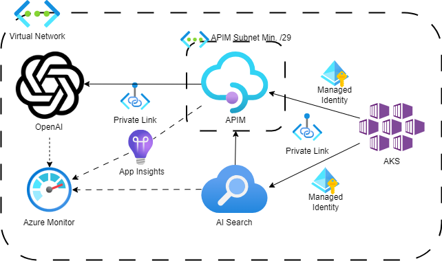
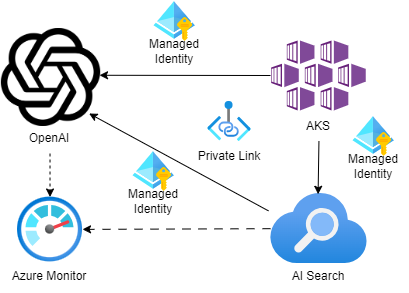

TODO
This page is a work in progress and will be updated in due course.
Azure AI Services¶
This article details the AI Services Architecture for the solution at a high level.
AI Services supported by ADP:
Warning
Please ensure you fellow DEFRA's guidelines and policies when using AI services. This includes the use of data and the use of AI services in general in order to ensure your delivery project is using AI responsibly.
Azure Open AI¶
Azure OpenAI Service provides REST API access to OpenAI's powerful language models including the GPT-4, GPT-4 Turbo with Vision, GPT-3.5-Turbo, and Embeddings model series. In addition, the new GPT-4 and GPT-3.5-Turbo model series have now reached general availability. These models can be easily adapted to your specific task including but not limited to content generation, summarization, image understanding, semantic search, and natural language to code translation.
Deployed & Supported Models¶
The Azure Development Platform (ADP) supports a range of models within Azure OpenAI. However, the availability of these models is limited to those supported by Azure in the UK South region. The following table lists the supported models:
| Model | Deployment | Quota | Description |
|---|---|---|---|
| gpt-4 | gpt-4 | 80k | An improvement on GPT-3.5, capable of understanding and generating both natural language and code. |
| gpt-35-turbo | gpt-35-turbo | 350k | An improvement on GPT-3, capable of understanding and generating both natural language and code. |
| text-embedding-ada-002 | text-embedding-ada-002 | 350k | Converts text into numerical vector form to facilitate text similarity comparisons. |
| text-embedding-3-large | text-embedding-3-large | 350k | The latest and most capable model for converting text into numerical vector form for text similarity comparisons. Please note that upgrading between different embedding models is not supported. |
Warning
All Delivery Projects should be mindful of the quota restrictions for each model per subscription/region. These models are shared resources among all Delivery Projects. If more quota is needed, ADP can make a request. However, please note that any increase in quota is subject to Microsoft’s approval.
Architecture¶

Within the ADP Platform, Azure Open AI Services are deployed with an Azure API Management (APIM) to provide a secure and scalable API endpoint for the AI services. The APIM is used to manage the API lifecycle, provide security, and monitor the API usage. The APIM is deployed in a Subnet (/29) and uses a private link to connect to the Azure OpenAI service. Additionally, a developer portal is deployed with the APIM, offering self-service API documentation for the AI services. Between the delivery projects service and the APIM, private link will be implemented and the APIM will use the services' managed identity with the role of Cognitive Services OpenAI User assigned. This will allow the APIM to access the AI services on behalf of the delivery project's service privately and securely.
For any other Azure services that require access to the AI services, they will need to utilize the APIM endpoint and the managed identity.
Iterative Deployment¶

To meet the timelines and requirements of the delivery projects, our initial step will be to deploy the Azure OpenAI Service. We will provide the AKS cluster and Azure AI Search with direct access to this service over a private endpoint, assigning the role of Cognitive Services OpenAI User.
This approach will enable the delivery projects to begin utilizing the AI services and provide valuable feedback. Once the APIM is deployed, we will transition the AI services to APIM. This will establish a secure and scalable API endpoint for the AI services.
Note
For local development purposes, the delivery projects can directly use the Azure Open AI services in the SND environment only, provided they are connected to the DEFRA VPN or using a DEFRA laptop. This setup will facilitate testing of the AI services and the provision of feedback.
Developer Access¶
For local development, developers will be able to access SND only via the DEFRA VPN or DEFRA laptop with the assigned role of Cognitive Services OpenAI User. Giving the developers the ability to test Azure Open AI services locally via APIM and view model deployments of the deployment Azure Open AI service.
For Dev plus environments, developers will be able to access SND only via the DEFRA VPN or DEFRA laptop with the assigned role of Cognitive Services OpenAI User. This will currently allow them to:
- View the resource in Azure Portal
- View the resource endpoint under “Keys and Endpoint” but not the keys.
- View the resource and associated model deployments in Azure OpenAI Studio
- View available models for deployment in Azure OpenAI Studio
- Use the Chat, Completions, and DALL-E (preview) playground experiences with any models that have already been deployed to this Azure OpenAI resource.
Note
In Dev plus environments, APIM endpoints will not be exposed for local developer access. They will remain accessible only to ADP Azure services or authenticated Delivery project's services.
Monitoring¶
APIM is used to enhance the monitoring of OpenAI usage per service. You can utilise an OpenAI Emit Token Metric policy to send metrics to Application Insights about consumption of large language model tokens through Azure OpenAI Service APIs. Token count metrics include: Total Tokens, Prompt Tokens, and Completion Tokens with additional dimensions such as the User ID and API ID. By leveraging these metrics, ADP can monitor usage per service. This information can be utilized by both the project delivery teams and ADP to infer usage, potentially request additional quota if required, and for billing purposes.
To monitor Azure Open AI directly we enable the Azure OpenAI Service Diagnostic Logs. This allows us to monitor the usage of the AI services directly. The log data is stored in Azure Monitor (Log Analytics Workspace), where both ADP and the delivery projects can gain insights such as:
- Azure OpenAI Requests: Total number of calls made to the Azure OpenAI API over a period of time.
- Generated Completion Tokens: Number of generated tokens (output) from an Azure OpenAI model.
- Processed Inference Tokens: Number of inference tokens processed by an Azure OpenAI model. Calculated as prompt tokens (input) + generated tokens.
Quota & Token Management¶
The Azure Open AI services are shared between delivery projects and have a quota limit per subscription/region. The quota limit is shared between the delivery projects and can be increased if required. The quota limit will be monitored by the ADP team and will be increased if required with the approval from Microsoft.
Given the current needs and requirements of the ADP platform, we have opted for the pay-as-you-go pricing model for the Azure Open AI services. This allows the delivery projects to pay only for what they use, eliminating concerns about overcharging. However, this does mean that there is a Tokens-per-Minute limit per model for the Azure Open AI services. Delivery projects need to be aware of this limit when using the AI services.
To manage this and ensure efficient use of Azure Open AI, APIM will provide policy enforcement to manage the quota limit and offer a better experience to the delivery projects when the quota limit is reached:
- Retry policy: When the quota limit is reached, the Azure OpenAI will return a 429 status code to the delivery project's service. APIM will implement a retry policy to wait for a certain amount of time before retrying the request to the Azure Open AI service. This will allow the delivery project's service to wait for the quota limit to be reset and then retry the request to the Azure Open AI service.
- Token limit policy: By relying on token usage metrics returned from the OpenAI endpoint, the policy can accurately monitor and enforce limits in real time. The policy also enables precalculation of prompt tokens by API Management, minimizing unnecessary requests to the OpenAI backend if the limit is already exceeded.
Possible Future Enhancements¶
Semantic caching for Azure OpenAI APIs in APIM¶
Enable semantic caching of responses to Azure OpenAI API requests to reduce bandwidth and processing requirements imposed on the backend APIs and lower latency perceived by API consumers. With semantic caching, you can return cached responses for identical prompts and also for prompts that are similar in meaning, even if the text isn't the same.
More Azure OpenAI Service Model Deployments¶
Currently, the range of models that can be deployed is limited to those supported by Azure in the UK South region. In the future, we will look to provide a broader selection the models for delivery projects to utilise. This includes potential support for additional models such as Whisper, DALL-E, and GPT-4o models.
Reserved Capacity for Azure OpenAI Service¶
Reserved capacity, also known as Provisioned Throughput Units (PTU), is a feature of Azure OpenAI. The newer offering, PTU-M (Managed), abstracts away the backend compute, pooling resources. Beyond the default TPMs described above, this Azure OpenAI service feature, PTUs, defines the model processing capacity. It uses reserved resources for processing prompts and generating completions.
PTUs are purchased as a monthly commitment with an auto-renewal option, which will reserve Azure OpenAI capacity within an Azure subscription, using a specific model, in a specific Azure region. TPM and PTU can be used together to provide scaling within a single region.
Please note, PTU minimums are very expensive. This requires ADP to be at a certain scale to justify the cost across its Delivery Projects.
Key Resources¶
- Azure Open AI Service
- GitHub: Microsoft - AzureOpenAI-with-APIM
- GitHub: aoai-apim
- Medium: Azure OpenAI Best Practice
- Managed Identity with APIM
- Role-based access control for Azure OpenAI Service
- MS Learn: Import Azure Open Open AI Service into APIM
Outstanding Questions¶
- ???
Azure AI Search¶
Azure AI Search (formerly known as "Azure Cognitive Search") provides secure information retrieval at scale over user-owned content in traditional and generative AI search applications.
Information retrieval is a foundational aspect of any application that surfaces text and vectors. Common use cases include catalog or document search, data exploration, and increasingly, chat-style applications over proprietary grounding data. When creating a search service, you’ll work with the following capabilities:
- A search engine for vector search and full text and hybrid search over a search index
- Rich indexing with integrated data chunking and vectorization (preview), lexical analysis for text, and optional applied AI for content extraction and transformation
- Rich query syntax for vector queries, text search, hybrid queries, fuzzy search, autocomplete, geo-search and others
- Azure scale, security, and reach
- Azure integration at the data layer, machine learning layer, Azure AI services and Azure OpenAI
ADP provides a managed Azure AI Search service for delivery projects to use which is scalable and secure using best practice. The core components (indexes, datastores, etc) of the Azure AI Search will be dependently deployable and can be created by delivery projects as required on a self-service basis.
Supported Features¶
Warning
Features that require external services will be limited to what has already been previously request by Delivery Projects. This normally effects supported data sources and skillsets. If a Delivery Project requires a new data source or skillset, they will need to request this from ADP and it will be reviewed and approved if it is required and does not affect the current delivery projects
Supported features of Azure AI Search:
- Indexes: An index is a persistent store of documents that are searchable using Azure AI Search. An index is similar to a database table, but it contains a schema that describes the structure of the documents within the index. An index can contain one or more fields, each of which has a name and a data type. An index can also contain a scoring profile, which is used to rank search results based on relevance. An index can be created, updated, and deleted using the Azure AI Search REST API or the Azure Portal.
- Indexers: Indexers are used to extract content from an external data source and populate an index with it. Indexers can be scheduled to run at regular intervals to keep the index up-to-date.
- Data Sources: A data source is a connection to an external data store that contains the content you want to index. Data sources can be used to connect to a variety of data stores, including Azure Blob Storage, Azure Cosmos DB, Azure SQL Database, and more.
- Azure Blob Storage: Azure Blob Storage is a cloud-based storage service that allows you to store large amounts of unstructured data, such as text files, images, and videos. Azure Blob Storage can be used as a data source for Azure AI Search to index content from text files, images, and videos.
- Skillsets: A skillset is a collection of cognitive skills that can be used to enrich content during indexing. A skillset can contain one or more skills, each of which performs a specific task, such as extracting text from images or translating text to another language. A skillset can be used to extract information from unstructured data, such as images, videos, and documents, and make it searchable using Azure AI Search. Supported Skillsets include:
- Azure Open AI Embedding Skillset: This skillset uses the Azure Open AI Embedding model to convert text into numerical vector form to facilitate text similarity. This skillset can be used to enhance the search experience by providing more relevant search results based on the semantic meaning of the text.
Architecture¶
ADP has selected a Standard SKU for the Azure AI Search service as it provides a cost effective balance of storage and query capacity for the delivery projects. Azure AI Search is a shared service between the ADP Delivery Projects. Allowing up to 50 indexes and 50 indexers in total and 35 GB of storage per partition and 160 GB of storage with two replicas, requiring two search unit per environment. This will allow 99.9% availability for read operations.
Note
The ADP Team can increase the tier and the number of search units (replicas and partitions) as required. Under the current scope of the delivery projects, the standard SKU with two search units is sufficient, allowing for 99.9% availability for read operations. If a project requires 99.9% availability for read/write operations, additional search units can be added.
Azure AI Search will not be reachable from the public internet and will only be accessible via a private link to DEFRA VPN, DEFRA laptops, or consuming Azure/ Delivery Project services via a private endpoint.
Delivery Project services will be given the role of Search Index Data Contributor scoped to the indexes that the service requires. This will allow the Read-write access to the content of these indexes.
Azure AI Search will need access to Azure Open AI embedding models to allow for semantic search in the search indexes and for use in its skill sets. No direct access to the Azure open AI services will be allowed and will only be accessible via the Azure API Management endpoint. To ensure that Azure AI Search has efficient access, the role of Cognitive Services OpenAI User will be assigned to the Azure AI Search service system assigned managed identity. This will allow the Azure AI Search service to access the Azure Open AI services via the APIM endpoint over a private link securely and efficiently.
Developer Access¶
For SND environments, developers will be able to access the Azure AI Search service via the Azure Portal with the assigned role of Reader across the whole of the AI Search service, as well as the role of Search Index Data Contributor scoped to the indexes that are created for their Delivery Project. This will allow the Read-write access to content of these indexes and also import, refresh, or query the documents collection of an index. It facilitates local development and testing of the Azure AI Search service.
For Dev plus environments, developers will be able to access the Azure AI Search service via the Azure Portal with the assigned role of Reader. This role currently enables them to read across the entire service, including search metrics, content metrics (storage consumed, number of objects), and the object definitions of data plane resources (indexes, indexers, and so on). However, they won’t have access to read API keys or content within indexes, thereby ensuring the security of the data control plane.
Developers in all environments will be able to access Azure AI Search only via DEFRA VPN or DEFRA laptop with restrictions that are detailed above.
Monitoring¶
Note
Azure AI Search doesn't monitor individual user access to content on the search service. If you require this level of monitoring, you need to implement it in your client application.
The diagnostic logs for Azure AI Search are stored in Azure Monitor (Log Analytics Workspace). This allows ADP and the delivery projects to gain insights into aspects such as latency, errors, and usage of the search service.
Deployment of Azure AI Search¶
The Azure AI Search service will be deployed as a common service for use by all Delivery Projects. For self-service creation and updating of the Azure AI Search Components, developers will be able to use ADP PowerShell scripts and a JSON definition file. These components will be created within the X repository, ensuring that the components are consistently created across all projects and environments using Azure Pipelines.
Token replacement¶
????
Possible Future Enhancements¶
- TBC
Key Resources¶
- Secure your Azure Cognitive Search indexes and queries with Azure AD
- Create a private endpoint for a secure connection to Azure AI Search
- Azure AI Search with skill sets
Outstanding Questions¶
- Where is the best place for the deployment scripts for Azure AI Search components? Very unsure of how is best to make this self-service for the delivery projects.
- What data source to support?
- What skillsets to support? Custom skillsets?